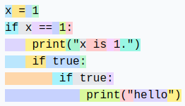

Introduction à la tokenization#
Un élément clé des modèles de langage (LLM) est la tokenization. Il s’agit de la première étape d’un réseau transformer, qui consiste à transformer un texte en une séquence d’entiers. Ce cours s’inspire largement de la vidéo de Andrej Karpathy, Let’s build the GPT Tokenizer.
Quand nous avons implémenté notre GPT, nous avons utilisé un tokenizer très simple qui encode chaque caractère avec un entier différent. En pratique, on préfère encoder des chunks de caractères, c’est-à-dire des groupements de caractères.
Comprendre comment fonctionne un tokenizer est essentiel pour saisir le fonctionnement d’un modèle de langage.
À la fin du cours, nous serons en mesure de répondre à ces questions :
Pourquoi les LLM ont du mal à épeler les mots ?
Pourquoi les LLM ont du mal à effectuer des opérations simples sur les chaînes de caractères (comme inverser une chaîne) ?
Pourquoi les LLM sont-ils meilleurs en anglais ?
Pourquoi les LLM sont-ils mauvais en arithmétique ?
Pourquoi GPT-2 n’est-il pas très bon en Python ?
Pourquoi mon LLM s’arrête-t-il directement si je lui envoie la chaîne “
” ? Pourquoi le LLM se casse-t-il quand je lui parle de SolidGoldMagiKarp ?
Pourquoi est-il préférable d’utiliser YAML plutôt que JSON avec les LLM ?
Note : Le tokenizer est une partie complètement séparée du LLM, avec son propre jeu de données d’entraînement et qui est entraîné différemment.

Tokenizer de GPT-2#
Commençons par analyser la tokenization de GPT-2 via le site Tiktokenizer pour comprendre ce qui peut poser problème. Le tokenizer de GPT-2 dispose d’un vocabulaire d’environ 50 000 mots, ce qui signifie 50 000 tokens distincts.
Arithmétique#
En premier lieu, si on examine la partie arithmétique, on remarque rapidement que les nombres peuvent être séparés en tokens de manière assez arbitraire. Par exemple :

998 est un token à part entière, mais 9988 est séparé en deux tokens : 99 et 88. On peut facilement imaginer que pour le LLM, compter devient compliqué.
Mots identiques, tokens différents#
Pour des mots identiques, selon la manière dont ils sont écrits, on obtient des tokens différents.
Par exemple :


Les 4 mots identiques sont représentés par des tokens différents (le token 198 correspond au retour à la ligne). Le modèle devra donc apprendre que ces tokens sont presque identiques.
Autres langues#
Pour la même phrase dans différentes langues, le nombre de tokens utilisés n’est pas le même :

Cela s’explique par le fait que le tokenizer de GPT-2 est entraîné principalement sur des données en anglais. En pratique, cela réduit les capacités du modèle dans les autres langues, car le contexte n’est plus le même en termes d’information. On peut insérer un texte beaucoup plus long en anglais qu’en japonais.
Python#
On peut observer comment le tokenizer se comporte avec le code Python :

Chaque espace de l’indentation est compté comme un token. Si le code contient de nombreuses conditions ou boucles, le contexte augmente rapidement, ce qui rend le modèle peu performant.
Note : Ce défaut a été corrigé dans les versions suivantes de GPT (3 et 4), une indentation de 4 tab est un unique token, par exemple.

Note 2 : La configuration de notre éditeur de code (2 ou 4 espaces pour l’indentation en Python) peut également influencer la tokenization.
Note 3 : Un LLM spécialisé dans le code aura aussi un tokenizer spécialisé, ce qui améliore les performances.
Créons notre propre tokenizer#
Pour créer notre propre tokenizer, commençons par voir comment convertir des chaînes de caractères en entiers.
Unicode#
Une méthode possible est d’utiliser le Unicode. Cela permet de convertir chaque caractère en un entier.
sentence="Ce cours de deep learning est génial !"
# ord() permet de récupérer le code unicode d'un caractère
unicode=[ord(char) for char in sentence]
print(unicode)
[67, 101, 32, 99, 111, 117, 114, 115, 32, 100, 101, 32, 100, 101, 101, 112, 32, 108, 101, 97, 114, 110, 105, 110, 103, 32, 101, 115, 116, 32, 103, 233, 110, 105, 97, 108]
En pratique, on ne peut pas utiliser cette méthode pour plusieurs raisons :
À ce jour, il y a presque 150 000 caractères, ce qui est trop important comme taille de vocabulaire.
Il y a régulièrement des mises à jour (une par an), ce qui rendrait un tokenizer basé sur l’Unicode obsolète au bout d’un an.
UTF-8#
Une autre possibilité est d’utiliser l’encoding UTF-8 (16 ou 32 bits seraient aussi possibles, mais moins pratiques), qui permet d’encoder l’Unicode en 4 à 8 bits. En faisant cela, notre taille de vocabulaire de base sera de 256.
On garde l’idée d’UTF-8, mais on souhaite augmenter la taille du vocabulaire, car 256 est trop petit et obligerait les LLM à avoir des tailles de contexte énormes.
sentence="Bonjour"
list(sentence.encode('utf-8'))
[66, 111, 110, 106, 111, 117, 114]
Algorithme de byte-pair encoding#
Pour augmenter notre taille de vocabulaire, on utilise l’algorithme byte-pair encoding. Le fonctionnement de cet algorithme est simple : on trouve de manière itérative la paire de bytes la plus fréquente et on la remplace par un nouveau token (ce qui augmente le vocabulaire de 1). Par exemple, prenons la séquence :
aaabdaaabac
À la première itération, on voit que la paire “aa” est la plus fréquente, on la remplace donc par le token Z :
ZabdZabac
Z=aa
À la deuxième itération, c’est la paire “ab” que l’on remplace par Y :
ZYdZYac
Y=ab
Z=aa
Enfin, à la troisième itération, on peut remplacer ZY par X :
XdXac
X=ZY
Y=ab
Z=aa
On a ainsi augmenté le vocabulaire tout en réduisant la taille de la séquence (et donc le contexte nécessaire pour la traiter).
L’avantage de cet algorithme est qu’on peut l’appliquer autant de fois que nécessaire jusqu’à obtenir une taille de contexte qui nous satisfait.
Note : Le choix des données d’entraînement a un impact crucial sur le tokenizer. Il faut les choisir en fonction de nos objectifs.
Application du byte-pair encoding#
Pour illustrer l’utilisation du byte-pair encoding, prenons un gros morceau de texte et comptons les paires. Pour cela, utilisons le premier chapitre du premier volume de La Comédie humaine de Balzac. Le texte a été récupéré sur Gutenberg.
with open('balzac.txt', 'r', encoding='utf-8') as f:
text = f.read()
print(text[:1000])
tokens = list(map(int, text.encode('utf-8')))
print(list(tokens[:1000]))
Au milieu de la rue Saint-Denis, presque au coin de la rue du
Petit-Lion, existait naguère une de ces maisons précieuses qui donnent
aux historiens la facilité de reconstruire par analogie l'ancien Paris.
Les murs menaçants de cette bicoque semblaient avoir été bariolés
d'hiéroglyphes. Quel autre nom le flâneur pouvait-il donner aux X et aux
V que traçaient sur la façade les pièces de bois transversales ou
diagonales dessinées dans le badigeon par de petites lézardes
parallèles? Évidemment, au passage de toutes les voitures, chacune de
ces solives s'agitait dans sa mortaise. Ce vénérable édifice était
surmonté d'un toit triangulaire dont aucun modèle ne se verra bientôt
plus à Paris. Cette couverture, tordue par les intempéries du climat
parisien, s'avançait de trois pieds sur la rue, autant pour garantir des
eaux pluviales le seuil de la porte, que pour abriter le mur d'un
grenier et sa lucarne sans appui. Ce dernier étage était construit en
planches clouées l'une sur l'autre comme de
[65, 117, 32, 109, 105, 108, 105, 101, 117, 32, 100, 101, 32, 108, 97, 32, 114, 117, 101, 32, 83, 97, 105, 110, 116, 45, 68, 101, 110, 105, 115, 44, 32, 112, 114, 101, 115, 113, 117, 101, 32, 97, 117, 32, 99, 111, 105, 110, 32, 100, 101, 32, 108, 97, 32, 114, 117, 101, 32, 100, 117, 10, 80, 101, 116, 105, 116, 45, 76, 105, 111, 110, 44, 32, 101, 120, 105, 115, 116, 97, 105, 116, 32, 110, 97, 103, 117, 195, 168, 114, 101, 32, 117, 110, 101, 32, 100, 101, 32, 99, 101, 115, 32, 109, 97, 105, 115, 111, 110, 115, 32, 112, 114, 195, 169, 99, 105, 101, 117, 115, 101, 115, 32, 113, 117, 105, 32, 100, 111, 110, 110, 101, 110, 116, 10, 97, 117, 120, 32, 104, 105, 115, 116, 111, 114, 105, 101, 110, 115, 32, 108, 97, 32, 102, 97, 99, 105, 108, 105, 116, 195, 169, 32, 100, 101, 32, 114, 101, 99, 111, 110, 115, 116, 114, 117, 105, 114, 101, 32, 112, 97, 114, 32, 97, 110, 97, 108, 111, 103, 105, 101, 32, 108, 39, 97, 110, 99, 105, 101, 110, 32, 80, 97, 114, 105, 115, 46, 10, 76, 101, 115, 32, 109, 117, 114, 115, 32, 109, 101, 110, 97, 195, 167, 97, 110, 116, 115, 32, 100, 101, 32, 99, 101, 116, 116, 101, 32, 98, 105, 99, 111, 113, 117, 101, 32, 115, 101, 109, 98, 108, 97, 105, 101, 110, 116, 32, 97, 118, 111, 105, 114, 32, 195, 169, 116, 195, 169, 32, 98, 97, 114, 105, 111, 108, 195, 169, 115, 10, 100, 39, 104, 105, 195, 169, 114, 111, 103, 108, 121, 112, 104, 101, 115, 46, 32, 81, 117, 101, 108, 32, 97, 117, 116, 114, 101, 32, 110, 111, 109, 32, 108, 101, 32, 102, 108, 195, 162, 110, 101, 117, 114, 32, 112, 111, 117, 118, 97, 105, 116, 45, 105, 108, 32, 100, 111, 110, 110, 101, 114, 32, 97, 117, 120, 32, 88, 32, 101, 116, 32, 97, 117, 120, 10, 86, 32, 113, 117, 101, 32, 116, 114, 97, 195, 167, 97, 105, 101, 110, 116, 32, 115, 117, 114, 32, 108, 97, 32, 102, 97, 195, 167, 97, 100, 101, 32, 108, 101, 115, 32, 112, 105, 195, 168, 99, 101, 115, 32, 100, 101, 32, 98, 111, 105, 115, 32, 116, 114, 97, 110, 115, 118, 101, 114, 115, 97, 108, 101, 115, 32, 111, 117, 10, 100, 105, 97, 103, 111, 110, 97, 108, 101, 115, 32, 100, 101, 115, 115, 105, 110, 195, 169, 101, 115, 32, 100, 97, 110, 115, 32, 108, 101, 32, 98, 97, 100, 105, 103, 101, 111, 110, 32, 112, 97, 114, 32, 100, 101, 32, 112, 101, 116, 105, 116, 101, 115, 32, 108, 195, 169, 122, 97, 114, 100, 101, 115, 10, 112, 97, 114, 97, 108, 108, 195, 168, 108, 101, 115, 63, 32, 195, 137, 118, 105, 100, 101, 109, 109, 101, 110, 116, 44, 32, 97, 117, 32, 112, 97, 115, 115, 97, 103, 101, 32, 100, 101, 32, 116, 111, 117, 116, 101, 115, 32, 108, 101, 115, 32, 118, 111, 105, 116, 117, 114, 101, 115, 44, 32, 99, 104, 97, 99, 117, 110, 101, 32, 100, 101, 10, 99, 101, 115, 32, 115, 111, 108, 105, 118, 101, 115, 32, 115, 39, 97, 103, 105, 116, 97, 105, 116, 32, 100, 97, 110, 115, 32, 115, 97, 32, 109, 111, 114, 116, 97, 105, 115, 101, 46, 32, 67, 101, 32, 118, 195, 169, 110, 195, 169, 114, 97, 98, 108, 101, 32, 195, 169, 100, 105, 102, 105, 99, 101, 32, 195, 169, 116, 97, 105, 116, 10, 115, 117, 114, 109, 111, 110, 116, 195, 169, 32, 100, 39, 117, 110, 32, 116, 111, 105, 116, 32, 116, 114, 105, 97, 110, 103, 117, 108, 97, 105, 114, 101, 32, 100, 111, 110, 116, 32, 97, 117, 99, 117, 110, 32, 109, 111, 100, 195, 168, 108, 101, 32, 110, 101, 32, 115, 101, 32, 118, 101, 114, 114, 97, 32, 98, 105, 101, 110, 116, 195, 180, 116, 10, 112, 108, 117, 115, 32, 195, 160, 32, 80, 97, 114, 105, 115, 46, 32, 67, 101, 116, 116, 101, 32, 99, 111, 117, 118, 101, 114, 116, 117, 114, 101, 44, 32, 116, 111, 114, 100, 117, 101, 32, 112, 97, 114, 32, 108, 101, 115, 32, 105, 110, 116, 101, 109, 112, 195, 169, 114, 105, 101, 115, 32, 100, 117, 32, 99, 108, 105, 109, 97, 116, 10, 112, 97, 114, 105, 115, 105, 101, 110, 44, 32, 115, 39, 97, 118, 97, 110, 195, 167, 97, 105, 116, 32, 100, 101, 32, 116, 114, 111, 105, 115, 32, 112, 105, 101, 100, 115, 32, 115, 117, 114, 32, 108, 97, 32, 114, 117, 101, 44, 32, 97, 117, 116, 97, 110, 116, 32, 112, 111, 117, 114, 32, 103, 97, 114, 97, 110, 116, 105, 114, 32, 100, 101, 115, 10, 101, 97, 117, 120, 32, 112, 108, 117, 118, 105, 97, 108, 101, 115, 32, 108, 101, 32, 115, 101, 117, 105, 108, 32, 100, 101, 32, 108, 97, 32, 112, 111, 114, 116, 101, 44, 32, 113, 117, 101, 32, 112, 111, 117, 114, 32, 97, 98, 114, 105, 116, 101, 114, 32, 108, 101, 32, 109, 117, 114, 32, 100, 39, 117, 110, 10, 103, 114, 101, 110, 105, 101, 114, 32, 101, 116, 32, 115, 97, 32, 108, 117, 99, 97, 114, 110, 101, 32, 115, 97, 110, 115, 32, 97, 112, 112, 117, 105, 46, 32, 67, 101, 32, 100, 101, 114, 110, 105, 101, 114, 32, 195, 169, 116, 97, 103, 101, 32, 195, 169, 116, 97, 105, 116, 32, 99, 111, 110, 115, 116, 114, 117, 105, 116, 32, 101, 110, 10, 112, 108, 97, 110, 99, 104, 101, 115, 32, 99, 108, 111, 117, 195, 169]
Comptons maintenant les paires :
def get_stats(ids):
counts = {}
for pair in zip(ids, ids[1:]):
counts[pair] = counts.get(pair, 0) + 1
return counts
stats = get_stats(tokens)
print("Les 5 paires les plus fréquentes : ",sorted(((v,k) for k,v in stats.items()), reverse=True)[:5])
top_pair = max(stats, key=stats.get)
print("La paire la plus fréquente est : ", top_pair)
Les 5 paires les plus fréquentes : [(5025, (101, 32)), (2954, (115, 32)), (2429, (32, 100)), (2332, (116, 32)), (2192, (101, 115))]
La paire la plus fréquente est : (101, 32)
Définissons maintenant une fonction pour fusionner les paires les plus fréquentes :
# Fonction pour fusionner les paires les plus fréquentes, on donne en entrée la liste des tokens, la paire à fusionner et le nouvel index
def merge(ids, pair, idx):
newids = []
i = 0
while i < len(ids):
# Si on est pas à la dernière position et que la paire correspond, on la remplace
if i < len(ids) - 1 and ids[i] == pair[0] and ids[i+1] == pair[1]:
newids.append(idx)
i += 2
else:
newids.append(ids[i])
i += 1
return newids
# Test de la fonction merge
print(merge([5, 6, 6, 7, 9, 1], (6, 7), 99))
print("taille du texte avant :", len(tokens))
# On fusionne la paire la plus fréquente et on lui donne un nouvel index (256 car on a déjà les caractères de 0 à 255)
tokens2 = merge(tokens, top_pair, 256)
print(tokens2[:100])
print("taille du texte après :", len(tokens2))
[5, 6, 99, 9, 1]
taille du texte avant : 128987
[65, 117, 32, 109, 105, 108, 105, 101, 117, 32, 100, 256, 108, 97, 32, 114, 117, 256, 83, 97, 105, 110, 116, 45, 68, 101, 110, 105, 115, 44, 32, 112, 114, 101, 115, 113, 117, 256, 97, 117, 32, 99, 111, 105, 110, 32, 100, 256, 108, 97, 32, 114, 117, 256, 100, 117, 10, 80, 101, 116, 105, 116, 45, 76, 105, 111, 110, 44, 32, 101, 120, 105, 115, 116, 97, 105, 116, 32, 110, 97, 103, 117, 195, 168, 114, 256, 117, 110, 256, 100, 256, 99, 101, 115, 32, 109, 97, 105, 115, 111]
taille du texte après : 123962
Avec une seule fusion, on a déjà bien réduit la taille de l’encodage du texte. Maintenant, on va définir la taille de vocabulaire souhaitée et fusionner autant de fois que nécessaire !
vocab_size = 276 # La taille du vocabulaire que l'on souhaite
num_merges = vocab_size - 256
tokens_merged=tokens
merges = {} # (int, int) -> int
for i in range(num_merges):
stats = get_stats(tokens_merged)
pair = max(stats, key=stats.get)
idx = 256 + i
print(f"merging {pair} into a new token {idx}")
tokens_merged = merge(tokens_merged, pair, idx)
merges[pair] = idx
merging (101, 32) into a new token 256
merging (115, 32) into a new token 257
merging (116, 32) into a new token 258
merging (195, 169) into a new token 259
merging (101, 110) into a new token 260
merging (97, 105) into a new token 261
merging (44, 32) into a new token 262
merging (111, 110) into a new token 263
merging (101, 257) into a new token 264
merging (111, 117) into a new token 265
merging (114, 32) into a new token 266
merging (97, 110) into a new token 267
merging (113, 117) into a new token 268
merging (100, 256) into a new token 269
merging (97, 32) into a new token 270
merging (101, 117) into a new token 271
merging (101, 115) into a new token 272
merging (108, 256) into a new token 273
merging (105, 110) into a new token 274
merging (46, 32) into a new token 275
On peut maintenant voir la différence entre les deux séquences de tokens :
print("Taille de base:", len(tokens))
print("Taille après merge:", len(tokens_merged))
print(f"compression ratio: {len(tokens) / len(tokens_merged):.2f}X")
Taille de base: 128987
Taille après merge: 98587
compression ratio: 1.31X
On a bien compressé la taille de la séquence tout en augmentant le vocabulaire de seulement 20. GPT-2 augmente le vocabulaire à 50 000, donc vous imaginez bien que cela réduit drastiquement la taille des séquences.
Décodage/Encodage#
Maintenant que nous avons construit notre tokenizer, nous voulons pouvoir passer des entiers (tokens) à notre texte et inversement.
Pour cela, construisons d’abord la fonction de décodage :
vocab = {idx: bytes([idx]) for idx in range(256)}
for (p0, p1), idx in merges.items():
vocab[idx] = vocab[p0] + vocab[p1]
# Fonction pour décoder les ids en texte, prend en entrée une liste d'entiers et retourne une chaine de caractères
def decode(ids):
tokens = b"".join(vocab[idx] for idx in ids)
text = tokens.decode("utf-8", errors="replace") # errors="replace" permet de remplacer les caractères non reconnus par le caractére spécial �
return text
print(decode([87]))
W
Et la fonction d’encodage :
# Fonction pour encoder le texte en ids, prend en entrée une chaine de caractères et retourne une liste d'entiers
def encode(text):
tokens = list(text.encode("utf-8"))
while len(tokens) >= 2:
stats = get_stats(tokens)
pair = min(stats, key=lambda p: merges.get(p, float("inf")))
if pair not in merges:
break
idx = merges[pair]
tokens = merge(tokens, pair, idx)
return tokens
print(encode("Bonjour"))
# On eut véifier que l'encodage et le décodage fonctionne correctement
print(decode(encode("Bonjour")))
# Et sur le text en entier
text2 = decode(encode(text))
print(text2 == text)
[66, 263, 106, 265, 114]
Bonjour
True
Motifs regex#
La série des GPT utilise des motifs regex pour séparer le texte avant de créer le vocabulaire. Cela permet d’avoir plus de contrôle sur le type de tokens générés (par exemple, éviter d’avoir différents tokens pour “chien”, “chien!” et “chien?”). Dans le code source de Tiktoken (tokenizer de GPT), on peut retrouver le motif suivant : ‘s|’t|’re|’ve|’m|’ll|’d| ?\p{L}+| ?\p{N}+| ?[^\s\p{L}\p{N}]+|\s+(?!\S)|\s+.
La syntaxe est assez complexe, mais nous allons la décomposer pour comprendre ce qu’elle fait :
‘s|’t|’re|’ve|’m|’ll|’d : Correspond aux contractions anglaises comme “is”, “it”, “are”, “have”, “am”, “will” et “had”. Ces tokens sont souvent importants à isoler dans le traitement du langage naturel.
?\p{L}+ : Correspond aux mots constitués de lettres. Le “?” en début signifie que le mot peut être précédé d’un espace, ce qui permet de capturer des mots avec ou sans espace initial.
?\p{N}+ : Correspond aux séquences de chiffres (nombres). De la même manière, un espace optionnel peut précéder la séquence de chiffres.
?[^\s\p{L}\p{N}]+ : Correspond à un ou plusieurs caractères qui ne sont ni des espaces, ni des lettres, ni des chiffres. Cela capture des symboles et des ponctuations, avec un espace optionnel au début.
\s+(?!\S) : Correspond à un ou plusieurs espaces suivis uniquement d’espaces (donc une séquence d’espaces en fin de chaîne ou avant une rupture de ligne).
\s+ : Correspond à une ou plusieurs espaces. C’est une correspondance générique pour les espaces multiples entre les mots.
import regex as re
gpt2pat = re.compile(r"""'s|'t|'re|'ve|'m|'ll|'d| ?\p{L}+| ?\p{N}+| ?[^\s\p{L}\p{N}]+|\s+(?!\S)|\s+""")
print(re.findall(gpt2pat, "Hello've world123 how's are you!!!?"))
['Hello', "'ve", ' world', '123', ' how', "'s", ' are', ' you', '!!!?']
Le texte a été séparé selon les conditions décrites dans le motif regex.
Tokens spéciaux#
Des tokens spéciaux sont également ajoutés pour l’entraînement et le finetuning :
<|endoftext|> : Ce token est utilisé pour délimiter la séparation entre différents documents dans les données d’entraînement.
<|im_start|> et <|im_end|> : Ces tokens délimitent le début et la fin d’un message de l’utilisateur pour un chatbot, par exemple.
Note : Lors du finetuning, il est possible d’ajouter des tokens au tokenizer (comme <|im_start|> et <|im_end|>, par exemple) spécifiques à la tâche que l’on souhaite réaliser. Bien sûr, cela demandera de modifier la matrice d’embedding et de la réentraîner.
Autres types de tokenizers#
Le tokenizer que nous avons implémenté est basé sur le tokenizer tiktoken d’OpenAI, utilisé sur les modèles GPT. Un autre tokenizer répandu est sentencepiece, utilisé sur les modèles de Google et de Meta, par exemple.
Note : Sentencepiece est bien plus complexe que tiktoken et dispose de nombreux paramètres à régler. En pratique, il est utilisé probablement parce que le code est open source (alors que le code d’entraînement de tiktoken n’est pas open-source, on a seulement accès au code pour encoder et décoder).
Tokenization sur d’autres modalités ?#
Lorsqu’on veut faire du traitement multimodal (c’est à la mode en ce moment), il faut produire des tokens à partir de modalités différentes du texte, comme le son ou les images. Idéalement, on transformerait notre son ou image en tokens pour les donner au transformer comme s’il s’agissait de texte.
Pour les images, on peut utiliser un VQVAE ou un VQGAN. L’idée est d’utiliser un VAE ou GAN pour générer des valeurs discrètes dans un espace latent. Ces valeurs discrètes sont ensuite utilisées comme tokens.

Figure extraite de l’article.
Le modèle SORA d’OpenAI fait un peu la même chose, mais sur des vidéos :

Figure extraite de l’article
Réponses aux questions du début#
Nous allons maintenant répondre aux questions posées au début du cours à l’aide de ce que nous avons appris :
Pourquoi les LLM ont du mal à épeler les mots ? La séparation en tokens fait que chaque mot n’est pas séparé en tous ses caractères, mais plutôt en chunks de caractères. Il est alors compliqué pour le modèle de les décomposer.
Pourquoi les LLM ont du mal à effectuer des opérations simples sur les chaînes de caractères (comme inverser une chaîne) ? C’est à peu près pour la même raison que la question précédente. Pour inverser un mot, il ne suffit pas d’inverser les tokens représentant ce mot.
Pourquoi les LLM sont-ils meilleurs en anglais ? Il y a plusieurs raisons à cela : les données d’entraînement du transformer et les données d’entraînement du tokenizer. Pour le transformer, plus de données en anglais lui permettent d’apprendre mieux la langue et ses subtilités. Pour le tokenizer, s’il est entraîné sur des données en anglais, les tokens générés seront principalement adaptés pour des mots anglais, donc on aura besoin de moins de contexte que pour les autres langues.
Pourquoi les LLM sont-ils mauvais en arithmétique ? Les nombres sont représentés assez arbitrairement en fonction des données d’entraînement. Réaliser des opérations sur ces tokens n’est pas une chose aisée pour le LLM.
Pourquoi GPT-2 n’est-il pas très bon en Python ? Comme nous l’avons vu dans ce cours, le tokenizer de GPT-2 transforme un simple espace en un token. En Python, avec l’indentation et de multiples conditions/boucles, il y a rapidement beaucoup d’espaces, ce qui impacte fortement le contexte.
Pourquoi mon LLM s’arrête-t-il directement si je lui envoie la chaîne “
” ? Il s’agit d’un token spécial ajouté dans les données d’entraînement pour séparer le texte. Lorsque le LLM le rencontre, il doit arrêter sa génération.Pourquoi le LLM se casse-t-il quand je lui parle de SolidGoldMagiKarp ? Cette question est un peu moins évidente, et je vous conseille de lire l’excellent blogpost. En expliquant simplement, si des mots sont présents dans les données d’entraînement du tokenizer mais pas dans les données d’entraînement du LLM, alors l’embedding de ce token ne sera pas du tout entraîné, et le LLM va se comporter de manière aléatoire lorsqu’il rencontre ce token. SolidGoldMagiKarp est un utilisateur Reddit qui devait apparaître régulièrement dans les données d’entraînement du tokenizer, mais pas dans les données d’entraînement du transformer.
Pourquoi est-il préférable d’utiliser YAML plutôt que JSON avec les LLM ? C’est un peu la même idée que pour Python. Le tokenizer de GPT-2 (et de la plupart des modèles, d’ailleurs) transforme un document JSON en plus de tokens que son équivalent YAML. Passer de JSON à YAML réduit donc le contexte nécessaire pour traiter le document.